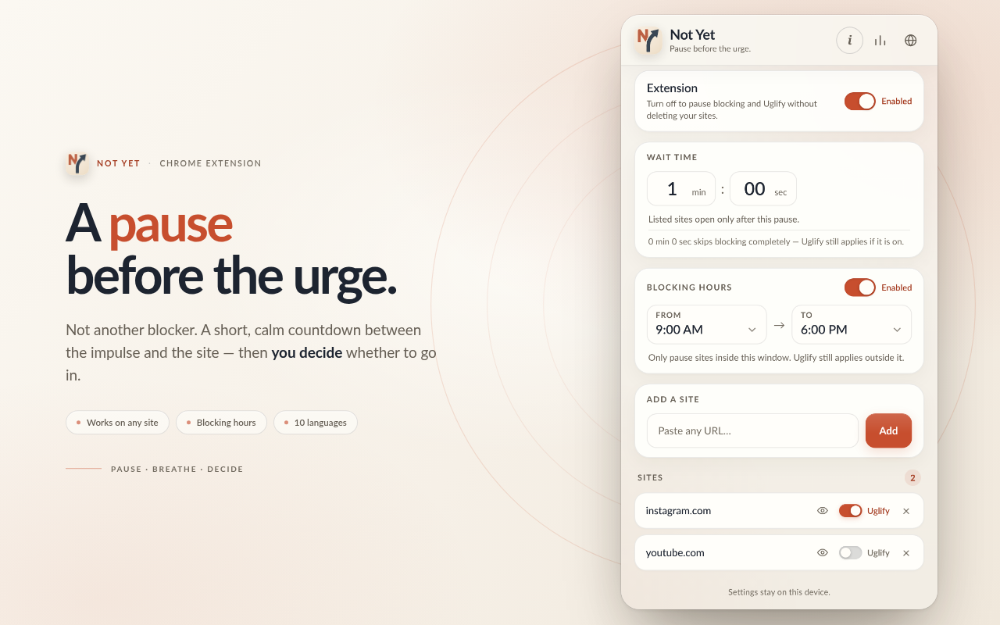
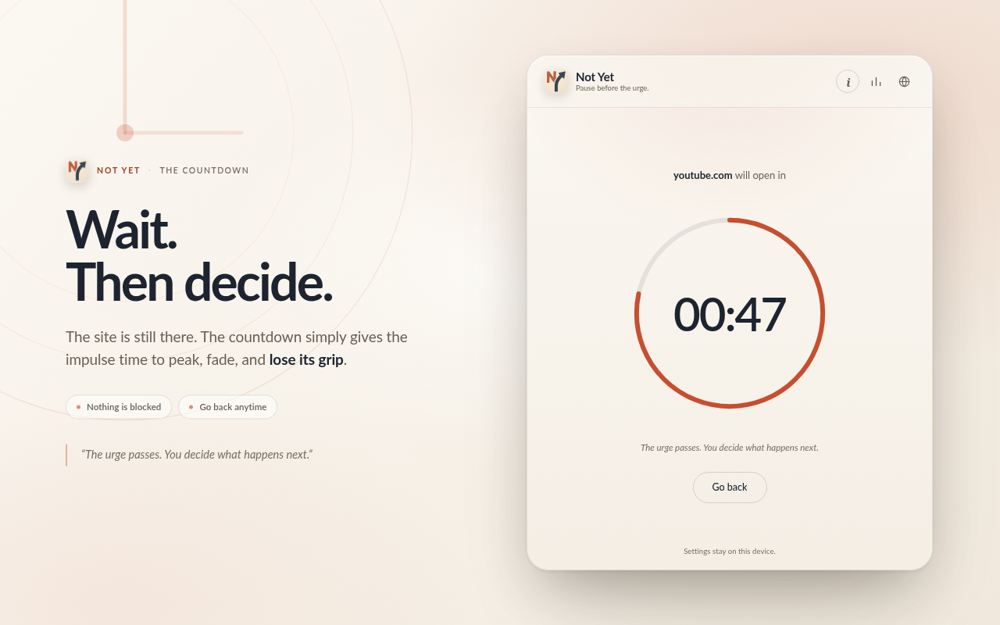
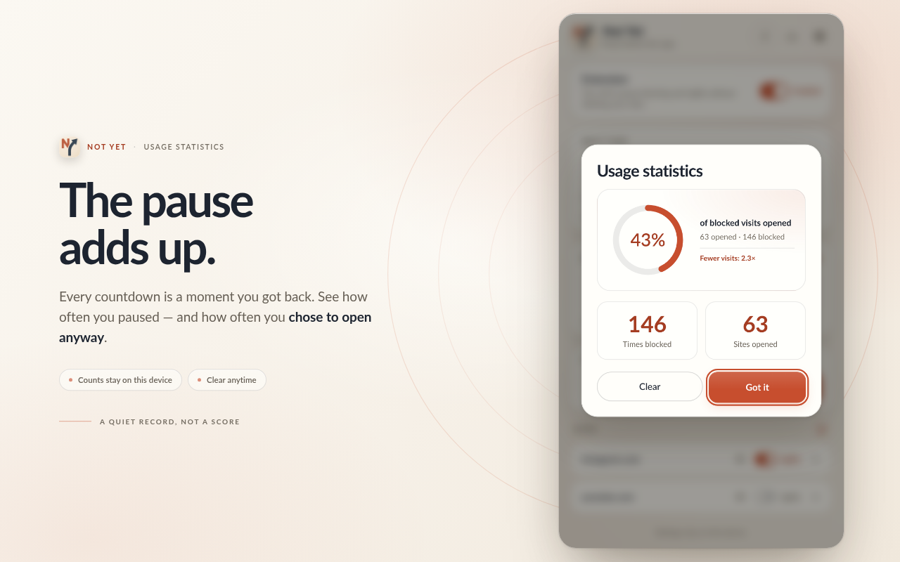
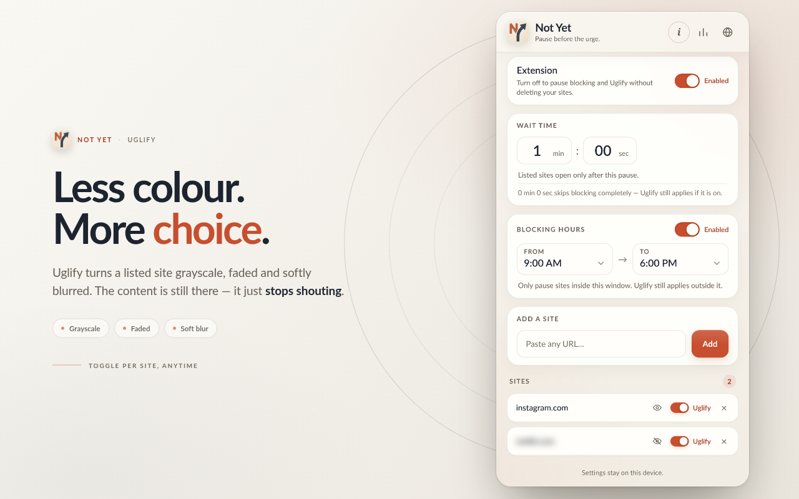

A calm countdown
A listed site opens only after the pause you chose. No wall, no shame — just time.
Not another blocker. A short, calm countdown between the impulse and the site — then you decide whether to go in.
Free · No account · Chrome Web Store

A few quiet tools that make the space between impulse and action a little easier to keep.
A listed site opens only after the pause you chose. No wall, no shame — just time.
Choose a window such as 9:00 AM–6:00 PM. Outside it, sites open freely; Uglify still applies.
Turn any listed site grayscale, faded and softly blurred, so it stops shouting for attention.
Set the wait to 0:00 to skip blocking completely. Uglify still works where it is enabled.
See how often you paused and how often you chose to open anyway. Counts stay on this device.
Blur site names in the list for screenshots and screen sharing.
English, 简体中文, हिन्दी, Español, العربية, Português, Русский, 日本語, Français, Deutsch.
Settings and statistics live in chrome.storage on your device. Nothing is sent anywhere.
The pause is the whole point: enough time for the impulse to peak and fade. The site is still there when you are ready.
Paste any URL. Only its domain is stored — paths, queries and www. are dropped.
Choose a wait from 0:00 to 99:59 and, if you like, a blocking-hours window.
A calm countdown appears. When it reaches zero, the site opens — or go back.

Warm colours, generous spacing and no dashboards shouting for attention.


Not Yet has no accounts, no analytics and no servers. Your site list, settings and statistics stay on your device.